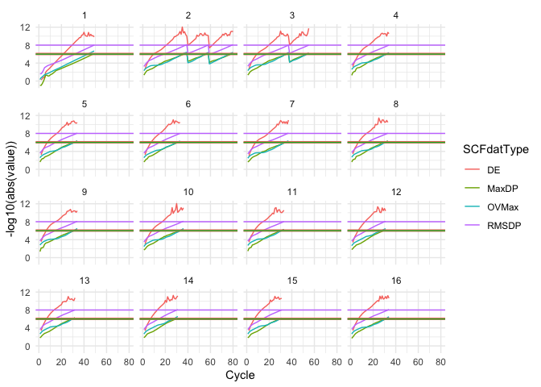
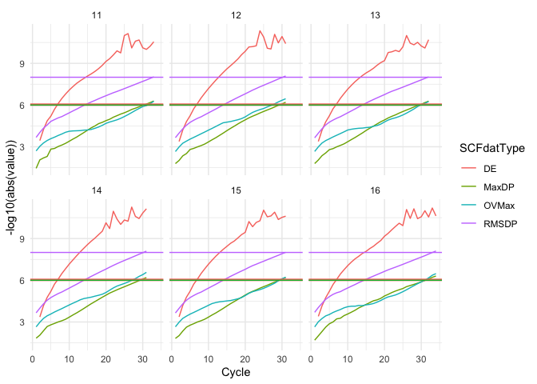
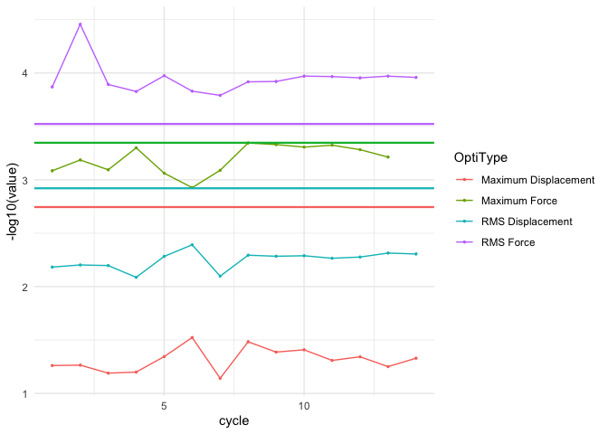

The goal of SCFMonitor is to enable Gaussian the quantum chemistry calculation software users to easily read the Gaussian .log files and monitor the SCF convergence and geometry optimization process with little effort and clear, beautiful and clean outputs. It can generate graphs using tidyverse to let users check SCF convergence and geometry optimization process real time. The software supports processing .log files remotely using with rbase::url(). This software is a suitcase for saving time and energy for the researchers, supporting multiple versions of Gaussian.
SCF monitor works for the .log files of the jobs that is still under calculation. SCFMonitor reads the convergence standard of SCF and optimization jobs automatically, adapting keywords like SCF=conver=6 IOp(8/117=-99) IOp(7/127=-99) or opt=loose.
Installation
You can install the development version of SCFMonitor from GitHub with:
# install.packages("devtools")
devtools::install_github("AzuleneG/SCFMonitor")Function and Example
When using with the log files stored on your hard drive, please replace SCFMonitorExample() to the directory of the .log file. For example, "~/GaussianJobs/opti/job.log" or "C:\GaussianJobs\opti\job.log"
ADD #p in the keyword of .gjf files to make sure specific information of SCF calculation is printed in the .log files. Otherwise it won’t work properly!
1.Monitor the SCF calculations
To check the SCF process of a Gaussian job, use MultipleRoundOptiSCFIntegratedMonitor(). It works both for the jobs with multiple rounds of SCF calculation and that only include one round of SCF.
To show the SCF convergence process of a directed opti job’s round, use SingleRoundOptiSCFIntegratedMonitor() instead.
library(SCFMonitor)
MultipleRoundOptiSCFIntegratedMonitor(SCFMonitorExample())
#> Warning: Removed 1 row containing missing values or values outside the scale range
#> (`geom_line()`).
#showing the information of all the rounds
SingleRoundOptiSCFIntegratedMonitor(SCFMonitorExample(), 5)
#> Warning: Removed 1 row containing missing values or values outside the scale range
#> (`geom_line()`).
#show the fifth optimization cycle's SCF convergence process2.Monitor the rounds of SCF Gaussian undergoes to meet the convergence standard.
OptiSCFConvergenceRoundMonitor(SCFMonitorExample())
#> `geom_smooth()` using method = 'loess' and formula = 'y ~ x'
#> Warning: Removed 1 row containing non-finite outside the scale range
#> (`stat_smooth()`).
#> Warning: Removed 1 row containing missing values or values outside the scale range
#> (`geom_line()`).
3.Check the optimization process of a Gaussian opt job.
 If the .log file is on sever and available through https, use url() to implement SCFMonitor like doing so on the files in the drive.
MultipleRoundOptiSCFIntegratedMonitor(url("somwhere.com/someguy/calculations/xxx.log"))